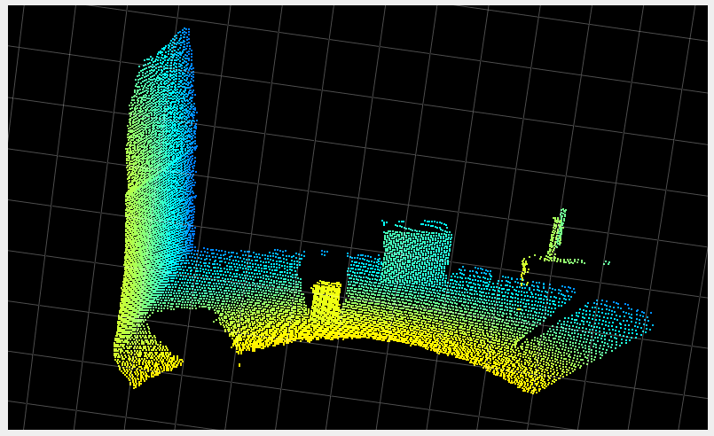
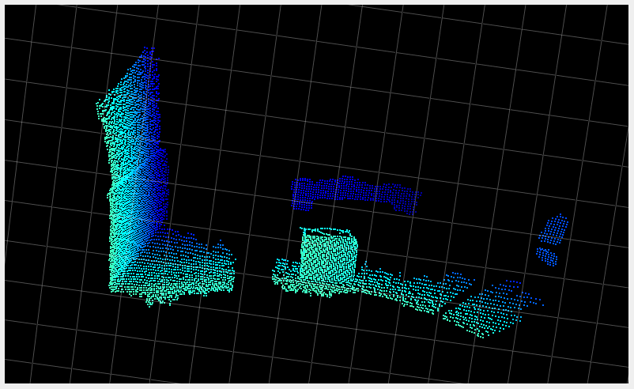

Acquisition parameters
Note: The min, max and default values of each parameter are defined in the JSON schema. To print out the schema, you can use the ifm3d CLI:
ifm3d jsonschema
Framerate
Variable name |
Short description |
|---|---|
|
Defines the number of frames captured each second |
For the O3R system the FPS is independent from the applied imager settings (exposure mode and times, filters, etc.). Higher exposure times, for example, will not negatively impact the system’s FPS. The O3R is designed to achieve 20 FPS in the 2 m and 4 m modes, regardless of applied settings.
Exposure Times
Variable name |
Short description |
|---|---|
|
These parameters are used to set the exposure times. |
Exposure times are utilized to maximize the number of valid pixels in a scene. The use of multiple exposures (HDR) permits the camera to operate in “dynamic” environments that require the detection of dark and light objects at both the minimum and maximum ranges.
The proper exposure time for a pixel depends on factors such as the dynamics of the scene and whether the target is moving or stationary. For highly reflective targets or for motion, a short exposure time is best. For targets far away or with low surface reflectance choosing high exposure time is preferable.
As such, it is common that all targets of a scene cannot be properly exposed with a single exposure time.
To reduce noise and the number of overexposed/underexposed pixels, we use three exposures for each frame. The standard modes provides two settable exposure times (expLong and expShort) plus a third constant exposure (set at 30 µs) designed to help detect highly reflective targets in the very near range (~1 m). Note that using a small ratio of exposure times helps reduce noise in transitions regions (where neighboring pixels use different exposure times).
Note: You can find which exposure time is used for each pixel by analyzing the confidence image as detailed here.
Delay
Variable name |
Short description |
|---|---|
|
The delay defines the minimum time delay between the framerate loop start and the actual imager trigger. |
The Delay parameter is not valid in IDLE state of the port and when Delay parameter is configured in IDLE state then the value is set back to its default(0). Please refer to this section for more details.
Software Trigger Group
Variable name |
Short description |
|---|---|
|
This parameter is used in IDLE state only and ports having same |
The swTriggerGroup parameter allows you to assign a port to a specific group, and all ports with the same swTriggerGroup value are considered to be part of that group. When any port within a group is software triggered, all other ports in the same group will also be triggered simultaneously.
:::{note} If the swTriggerGroup is zero(default) then no other ports will be triggered except the one which is triggered.
:::
To perform a software trigger one can use ifm3d API function Example scenario: For illustrative purposes, let’s consider an example:
Four camera heads are connected to the VPU and the
swTriggerGroupvalue for the respective ports are as follows.
PORT |
|
State |
|---|---|---|
0 |
0 |
IDLE |
1 |
2 |
IDLE |
2 |
0 |
IDLE |
3 |
2 |
IDLE |
In this scenario, PORT1 and PORT3 are part of the same synchronization group (group 2), while PORT0, PORT2 belongs to default synchronization group. Software triggering PORT1 or PORT3 will trigger both ports simultaneously, ensuring coordinated actions between them. PORT0, PORT2 with a different swTriggerGroup, operates independently of the other two ports.
Offset
Overview
Variable name |
Short description |
|---|---|
|
Shifts the start point of the measured range (see mode) |
Coded modulation dictates the base range of the camera (for example 0 to 2 m). Coded modulation also allows this range to be offset or shifted from its start point. In the example of 0 to 2 m base range, an offset of 0.5 m would lead to a 0.5 to 2.5 m range. Continuing this example, an offset of 1 leads to a 1 to 3m range. The offset can be changed frame by frame.
Details
The offset parameter shifts the beginning of the measurement range in space. For instance, when using the 2m mode with an offset of 1m, the O3R will compute distance data for a range between 1 and 3 m from the camera.
Using the offset can allow you to collect distance measurements past the measurement range set by the mode while taking advantage of the robust point cloud the O3R provides and the particularities of each mode.
The offset can be set at negative values, which brings the end of the measurement range closer to the camera. This can be useful for mitigating MPI artifacts, for instance, or for avoiding artifacts caused by highly reflective objects (see stray-light artifacts), by removing the cause of the artifact from the FOV.
Example
Let’s look at the following scene. Three boxes are positioned in front of the camera at about one, two, and three meters away.

We are using the 2m mode, with all the other settings as default. The table below shows the point cloud for multiple values of the offset.
Offset (meters) |
Point Cloud |
|---|---|
-0.5 |
|
0 |
|
1.5 |
 |
2.5 |
 |


Note: In the last image where the offset is set to 2.5m, we can see that the noise is higher than in the other images. This is due to the distance to the camera, with which the noise increases, and to the fact that the most robust measurement is in the middle of the range, which is from around 3 to 4 m in the case of the last example. The ground in front of the box is outside of the robustness area.
Channel selection and channel value
Variable name |
Short description |
|---|---|
|
Defines the user mode for handling channel selection: currently only manual |
|
Defines the channel value |
This concept for cross talk mitigation is based on channels, each channel corresponding to a different modulation frequency. Use a channel combination of mutually exclusive channels to almost completely reduce the possibility and effect of cross talk between O3R camera heads. The channel value has to be set per 3D TOF imager / O3R camera head. By default it is to value 0.
A channel value difference of 2 has been shown to be adequate. Any additional channel value offset (> 2) will not improve crosstalk mitigation between O3R camera heads. Use intermediate, that is odd channel numbers if larger numbers of channels are required: We suggest to geometrically separate cameras with channel differences 1 - for example forward and backward facing cameras on an AGV / AMR.
As of firmware version 1.0.14 the channel value has to be manually set to a distinct value. We suggest to couple the channel value selection to a (randomized) channel value based your AGVs / AMRs serial number:
O3R VPU ETH0 MAC IDs can be used but a “customer-serial number” or even “customer-site-specific-serial-number” is preferred. This is because these numbers are in better control by the customer than a MAC address. So finding a systematic way to map from an (arbitrary increasing) MAC-addresses to (linearly increasing) channels is difficult. Ideally there is a “customer-site-specific-serial-number” that more or less counts the vehicles in one location, i. e. a simple mod(number,200) would do the trick.